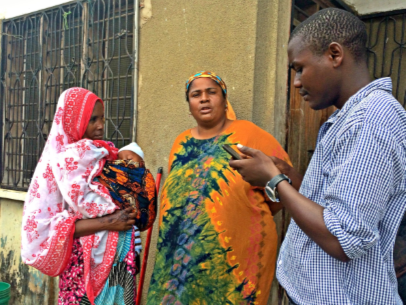
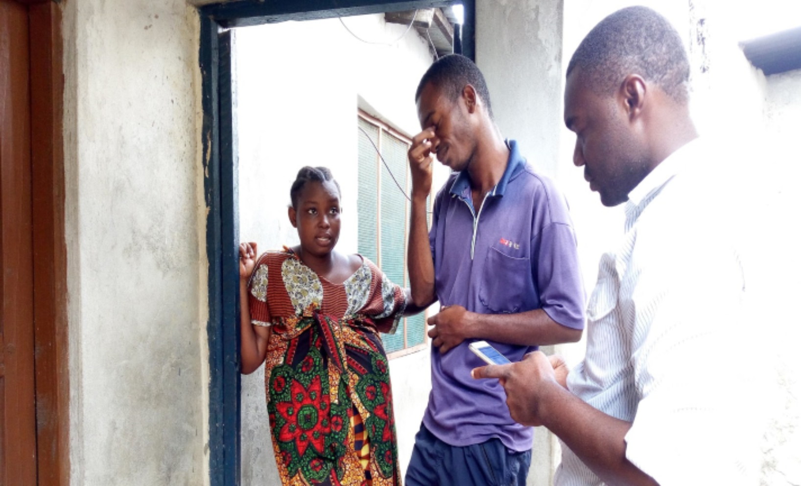

OpenMap Development Tanzania
"Community, Technology, Innovation"
OpenMap Development Tanzania
"Community, Technology, Innovation"
Mradi wa Data Zetu ni moja ya miradi inayolenga kuwapa uwezo viongozi na wadau mbalimbali wanaotumia taarfa kufanya maamuzi kwa ajili ya faida ya jamii yao hususani kuokoa maisha. Katika kufanikisha hili mradi unawapa nafasi wanajamii kuhusika katika zoezi kuanzia kuchangia mada nini kinawasumbua na kinaitaji utatuzi, tatizo lipi lianze kutatuliwa kwenye jamii yao ili kuweze kuwanufaisha wao na wadau wanaoweza tatua tatizo hilo kwa kufanya maamuzi sahihi kuptia taarifa.
Ukusanyaji wa taarifa mara nyingi huwa unawahusisha watu wenye taaluma kuhusiana na ukusanyaji wa taarifa. Hii imekuwa tofauti kwa HOT kwani imekuwa ikifanya kazi na wanajimii wenyewe kukusanya taarifa kwenye maeneo yao husika, kwa kutumia vifaa vyao wenywe (simu) na elimu ndogo ya ukusanyaji wa taarifa kutoka kwa timu ya HOT. Zoezi hili limefanikiwa kwa kiasi kikubwa sana kwa kuwa taarifa zote zilizokusanywa katika mradi huu zilikusanywa na wananchi kwa kushirikiana na viongozi wa mtaa na wanajamii wa eneo hilo.
 Wanajamii wakikusanya taarifa.
“Nimejifunza teknologia mpya ambayo sikuweza kujua kama simu yangu inaweza kusaidia jamii yangu kuishi vizuri” Halima Juma- Mwananchi Makangarawe
“Nikiwa kama kiongozi hili zoezi litanisaidia kujua tatizo la eneo langu kiundani zaidi na kama wakitokea wafadili nitajua nini kipewe kipaumbele”. Hamisi Mashaka Mjumbe Yombo Dovya
“Zoezi hili naomba liwe endelevu maana linawapa nafasi hususani vijana kushiriki kazi za maendeleo ya jamii yao”. Reah Mohamed- Mjumbe, serikali ya Mtaa Makangarawe
“Huu ni mtaa wangu nina uhakika nikienda kumuuliza maswali mwananchi mwenzangu tutapata majibu sahihi kwani watakuwa huru na anayewahoji kwani ni mmoja wa watu wanaomzunguka” Mohamed- Mwananchi, Mtaa wa Dovya
Mradi wa Ramani Huria awamu ya pili (RH 2.0) unaendeleza kwa namna ya kipekee jitihada za kusaidia wanajamii kuwa wastahimilivu wa janga la mafuriko katika mkoa wa Dar es salaam. Mradi huu unahusika na ukusanyaji wa taarifa mbalimbali kama Makazi, Miundombinu, Athari za mafuriko na visababishi vyake. Taarifa zote hizi zinakusanywa na wanajamii pamoja na wanafuzi wa vyuo mbalimbali hususani chuo kikuu Ardhi kwa kutumia teknolojia ya kawaida kabisa kama simu ya mkononi (smartphone) na vifaa kama futi kamba, fimbo iliyo wekwa vipimo (measuring rods), tochi, na vioo (kuangalia mitaro iliyo funikwa). Taarifa hizi zinakusanywa kupitia programu ya mfumo wa simu (android) iliyowekwa programu ya Open Data Kit (ODK) iliyoboreshwa kwaajili ya kukusanya taarifa mbalimbali.

Muonekano wa program u ya ODK katika ukusanyaji wa taarifa na Timu ya ukusanyaji taarifa wakiwa kazini
Taarifa zote zinazohusiana na mitaro zinakusanywa katika zoezi hili na kutumwa katika mfumo maalumu kwaajili ya kusafishwa na kutumika katika maamuzi mbalimbali kama kutengeneza “model” ya mafuriko katika jiji la Dar es Salaam ambayo itaonyesha mwenendo wa maji endapo mvia itanyesha na wap mafuriko yatatokea kulingana na aina ya mitaro iliyopo. Baadhi ya taarifa zinazokusanywa ni pamoja upana, urefu wa mtaro na vipimo vingine kama mwinuko kutoka usawa wa barabara (elevation), nyenzo zilizotumika kutengeneza mtaro (Materials), hali ya mtaro (drainage condition/smoothness) na taarifa nyingine nyingi. Pia aina nyingine ya taarifa ni sehemu zenye matatizo katika mitaro kama uchafu, sehemu zilizohariibika, mitaro iliyofukiwa na mengine mengi.
Matumizi ya vifaa katika zoezi la ukusanyaji taarifa
Namna hii ya ukusanyaji wa taarifa unaweza kufanywa na mtu yoyote kutegemea na matumizi yake. Hivi karibuni wanafunzi wa chuo kikuu Ardhi wametumia njia hii ya ukusanyaji wa taarifa zitakazowawezesha kufanya “drain design” katika mji wa Moshi. Mradi wa Ramani Huria utawezesha taarifa hizi kutumika katika namna tofauti tofauti kama kuandaa ramani ya kuonyesha hali ya mitaro na uelekeo wa maji, pia kujua sehemu zenye matatizo kuwezesha mashirika ya kijamii na serikali katika kufanya maamuzi ya kuisaidia jamii kustahimili maafa.
Data kabla na baada ya kusafishwa na kutengeneza ramani
Mradi huu tayari umefanikiwa kukusanya taarifa katika kata 20 za jiji la Dar es salaam zinazoonyesha taarifa zote za mitaro na mahali ambapo kuna matatizo tayari kwa ajili ya matumizi katika mbalimbali. Zoezi hili litakamilika baada ya kukusanya taarifa katika kata 44 ambazo ziko kwenye mradi. Mwisho wa mradi itapatikana “model” itakayoonyesha namna mitaro inavyo onekena katika kata husika mpaka yanapoishia, iwe mtoni au kumwagika katika makazi ya watu.
Taarifa hizi zinakusanywa kwa umahiri wa namna mbalimbali, hii ni kutokana na usimamizi wa ukusanyaji data na usafishwaji wa taarifa kwa timu yenye uzoefu wakishirikina na mtaalam wa masuala ya maji kutoka Deltares Uholanzi katika kuhakikisha taarifa hizi zinakua bora na zenye manufaa kwa jamii.
Namna ya kuangalia data zilizokusanywa kimakosa ili kuzirekebisha